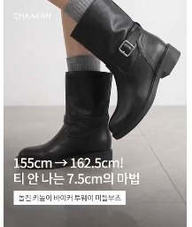
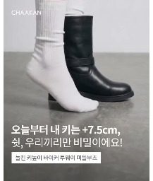

웅냥이님 · 핵심 키워드: 티 안 나게 키 커진다
'Pov: ~룩' 고정 자막을 단 거울샷으로 여는 웅냥이님 영상 톤 그대로 열고, 키높이 효과는 착화 전후 비교로 보여주세요.
이번에 소개할 EDIT 키높이 부츠
아래 부츠 한 켤레로 촬영해요. 자막의 높이는 아래 공식 표기를 사용해 주세요.
사진을 누르면 공식 상품 상세로 이동해요. 모바일에서는 옆으로 넘겨 볼 수 있어요.
제품은 위 풀문 부츠 한 켤레로 확정했어요. 일정은 협의 후 확정해요. 키 수치는 확인한 본인 키와 제품의 공식 높이(7cm)로 맞춰요.
반드시 확보할 촬영 컷
① 첫 장면 ② 핵심 소구 증명 ③ 제품 디테일 ④ 착화 모습 ⑤ 구매 안내
한 장면으로 여러 역할을 충족해도 돼요. 예시의 모든 장면을 찍는 것은 아니에요. 실제 촬영 방법과 중간 순서는 담당자와 함께 정해요.
한 컷 더 부탁드려요 신발만 보이는 정지 컷 · 2~3초
광고로 썼을 때 반응이 가장 좋았던 구도예요. 영상 중간이나 끝에 2~3초만 넣어 주시고, 이 컷은 자막·음악 없는 원본으로도 따로 보내 주세요. 둘 중 하나면 충분해요. 아래 사진은 다른 제품으로 찍은 광고 장면이라 구도만 참고해 주세요.

① 부츠만 옆에서밝은 바닥·벽 앞에서 무릎 아래만, 카메라와 발은 움직이지 않아요. 이번 제품 한 켤레만 보여요.
② 한쪽만 신고 나란히양말 발과 부츠 신은 발을 옆에서 나란히. 굽 높이 차이가 한눈에 보이게 그대로 멈춰요.기본 레시피
기본 구성훅→키높이 비교→신발 디테일→착화감 어필→착화→CTA
첫 장면과 구매 안내는 앞·끝에 두고, 중간 순서와 장면은 함께 정해요. 아래 조합은 출발안이며 합의 전 확정안은 아니에요. 조회수는 원본 전체 영상의 수치로, 개별 컷의 전환 효과를 뜻하지 않아요. 예시 속 제품·숫자·가격은 이번 조건으로 바꿔요.
A 훅 · 키높이 비교도입관심을 끄는 훅과 키높이 전후 비교를 보여주세요.
수치 자막과 실제 높이 비교를 함께 넣어요. 수치 전신만으로 비교를 대신하지 않아요. A-8 · A-9
A-12반전 한 줄 (POV)
"POV: ~했는데 ~됨"처럼 반전 한 줄로 열어요. 'Pov: ~룩' 고정 자막을 단 거울샷으로 여는 웅냥이님 영상 톤 그대로예요.
A-12
탈의실 전신 거울샷 위에 'Pov: ~룩 / 우연히 디깅했을 때' 고정 자막 한 줄로 열어요. 부츠 편도 이 자리에 부츠 한 줄만 바꿔 넣으면 돼요.조회 확인 예시조회 40.4만원본 ↗웅냥이님 영상A-12
'첫 데이트 갔는데…' 같은 이야기 한 줄로 열어요. 부츠 편은 '키작녀가 7cm 부츠 신고 갔는데…' 식으로 같은 흐름이에요.조회 확인 예시조회 17.9만원본 ↗웅냥이님 영상A-8키높이 첫 장면 · 좌우 비교 / 바지 끌림
전후 높이 비교와 바지 밑단 고민 훅을 나란히 보고 이번 촬영의 첫 장면을 정해요.
키 차이가 한눈에 보이게- 카메라 위치·높이·줌을 고정해요. 같은 옷·자리·자세로 맨발 또는 양말 상태와 착화 후를 촬영해요.
- 머리끝부터 발끝·바닥까지 담고, 전후 장면을 좌우로 붙여요. 머리 높이 기준선을 넣어 차이를 보여줘요.
- 바지 끌림은 같은 바지·같은 밑단 길이로 촬영해요. 비교 중에 허리나 밑단을 올리지 않아요.
- 수치 자막은 선택 제품의 공식 높이를 확인해 “신으면 +Ncm”로 넣어요. 예시 영상의 수치를 복사하지 않아요.
A-8
촬영 구도: 정면 전신 좌우 합성. 같은 사람의 신기 전·후를 같은 크기로 나란히 놓아요.조회 확인 예시조회 149.9만원본 ↗A-8
촬영 구도: 정면 전신 좌우 합성. 같은 옷·같은 위치에서 160→167cm 차이를 보여줘요.조회 확인 예시조회 82.7만원본 ↗A-14
촬영 구도: 바닥 가까운 로우앵글. 바지 밑단과 신발을 클로즈업하고 “바지 질질 끌고 다니는 사람 주목” 자막으로 시작해요.조회 확인 예시조회 6.9만 · 10/19 확인원본 ↗A-14
촬영 구도: 바닥 가까운 로우앵글로 걷는 발과 끌리는 바지 밑단을 보여줘요. 원본은 수선 팁 영상으로, 도입 구도 참고예요. 좋아요는 9/9 기록값이에요.촬영 구도 예시좋아요 1,238원본 ↗다른 표현 선택지 보기
A-7키 수치 전신
전신에 이번 제품의 확정 수치를 넣어요. 수치 자막만으로 전후 비교가 완료되지는 않아요. A-8 또는 A-9 비교를 함께 확보해요.
A-7
촬영 구도: 정면 전신 고정. 부츠를 신은 다리를 들어 굽과 다리 길이를 보여주고 +6.5cm 자막을 겹쳐요.조회 확인 예시조회 173.2만원본 ↗A-7
촬영 구도: 정면 전신 고정. 한쪽 발을 뒤로 들고 157→164 수치 자막을 보여줘요.조회 확인 예시조회 88.7만원본 ↗추가 예시 · 구도 참고 보기
A-7
촬영 구도: 거울 전신 정면. 무릎을 살짝 굽힌 착화 모습 위에 높이 수치 자막을 보여줘요.조회 확인 예시조회 60.5만원본 ↗A-9한쪽만 신기
한쪽만 신어서 높이 차이를 보여줘요.
A-9
촬영 구도: 정면 하체 고정. 한 발은 양말, 한 발은 메리제인을 신어 발 높이 차이를 보여줘요.조회 확인 예시조회 165.4만원본 ↗A-9
촬영 구도: 바닥 높이의 발 클로즈업. 한쪽만 샌들을 신고 맨발 쪽 앞꿈치를 들어 높이를 맞춰요.조회 확인 예시조회 10.0만원본 ↗랭킹 캡처 활용 요청
착한구두의 1위 이력을 보여주세요.
아래 랭킹 캡처를 브랜드 소개 장면에 넣어 주세요. “무신사 1위 부츠를 만든 착한구두에서, 저는 이 부츠를 골랐어요.”처럼 자연스럽게 이어 주시면 좋겠어요. 삽입 위치와 길이는 자유롭게 정해 주세요.
캡처 활용 안내
플랫폼명·카테고리·1위 표시·착한구두 상품명이 함께 보이도록 잘라 주세요. 무신사 캡처는 페탈 부츠의 부츠/워커 상품 순위, 지그재그 캡처는 착한구두 스니커즈의 상품 순위예요. 브랜드 순위가 아니라 착한구두의 상품 1위 이력으로 보여 주세요.
각 캡처에 표시된 시점·카테고리의 순위예요.
캡처를 영상에 넣은 예시
착장 영상 위에 상품 페이지 캡처를 배치한 예시예요. 랭킹 인증 사례는 아니고, 이미지를 영상 위에 올리는 방식만 참고해 주세요. 크기·위치·노출 시간은 웅냥이님 스타일대로 정하시면 돼요.
 전신 착장 옆에 상품 캡처 배치가운데 착장과 부츠를 보여 주면서 상품 사진·정보 부분을 잘라 양옆에 띄운 예시예요.원본 4.2초 장면 ↗
전신 착장 옆에 상품 캡처 배치가운데 착장과 부츠를 보여 주면서 상품 사진·정보 부분을 잘라 양옆에 띄운 예시예요.원본 4.2초 장면 ↗B 디테일 · 착화감중간신발 디테일과 착화감을 소개해 주세요.
B-1
부츠를 양손에 들고 정면 소개. 신기 전에 제품 전체를 한 번 보여주는 자리예요.조회 확인 예시조회 17.9만원본 ↗웅냥이님 영상B-1
촬영 구도: 손에 든 슬링백을 가까이 보여주는 제품 디테일 컷.조회 확인 예시조회 33.9만 · 10/19 확인원본 ↗추가 예시 · 구도 참고 보기
B-1
촬영 구도: 신발을 손에 들고 가까이 보여주는 야외 디테일 컷.조회 확인 예시조회 7.1만 · 10/19 확인원본 ↗B-6
촬영 구도: 착화 상태의 발을 내려다보는 컷과 걷는 컷에 착화감 자막을 넣어요.조회 확인 예시조회 7.1만 · 10/19 확인원본 ↗B-6
촬영 구도: 신발 안쪽 탑다운 클로즈업. 손가락으로 쿠션을 눌러 눌림과 복원을 보여줘요.조회 확인 예시조회 6.9만 · 10/19 확인원본 ↗C 착화중간신발을 신은 모습을 보여주세요.
C-7
니삭스+검정 부츠가 전신 구도로 선명한 컷. 풀문 부츠도 이 구도로 신은 모습과 비율을 함께 보여줘요.조회 확인 예시조회 6.8만원본 ↗웅냥이님 영상C-7
밑단과 신발 하단 클로즈업. 키높이 편에선 여기서 굽과 바지 밑단을 함께 짚어요.조회 확인 예시조회 40.4만원본 ↗웅냥이님 영상추가 예시 · 구도 참고 보기
C-7
촬영 구도: 슬링백을 신은 하체를 정면과 측면에서 보여줘요.조회 확인 예시조회 33.9만 · 10/19 확인원본 ↗C-7
촬영 구도: 거울 전신 착화. 청바지와 스커트 코디에 같은 신발을 보여줘요.조회 확인 예시조회 7.1만 · 10/19 확인원본 ↗D CTA마무리댓글 키워드와 구매 링크를 안내해 주세요.
D-2CTA · 구매 안내
댓글 키워드와 구매 링크를 안내해 주세요.
D-2
첫 장면 거울 전신으로 돌아와 포즈로 마무리. 구매 안내 자막과 댓글 키워드를 여기에 얹어요.조회 확인 예시조회 40.4만원본 ↗웅냥이님 영상D-2
촬영 구도: 거울 착장 화면에서 댓글 키워드와 링크 발송을 안내해요. 조회수는 기존 가이드 기록값이에요.조회 확인 예시조회 29.6만원본 ↗D-2
촬영 구도: 신은 발 클로즈업에 “댓글 달아주시면 구매 링크 보내드릴게요” 자막을 넣어요.촬영 구도 예시구도 참고원본 ↗